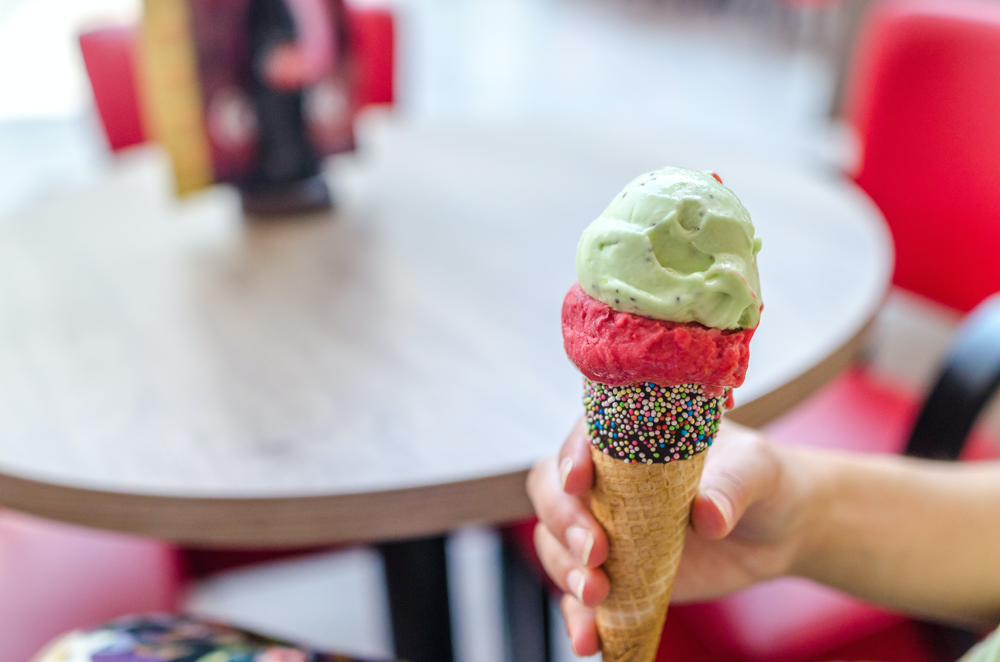

Roman Style Lemon Ice

Description
A classic italian ice dessert from the Talisman Italian Cook Book.
Enjoy this during the summertime. Serves 6.
Ingredients
- 1 1/2 cups sugar
- 1 quart water
- 3/4 cup lemon juice
- 1 egg white
- 1/4 cup sugar
- 2 jiggers rum
Steps
- Combine sugar and water in saucepan and heat until sugar melts
- Add lemon juice and strain through very fine sieve
- Freeze until mushy, stirring frequently, and remove from freezer.
- Add stiffly beaten egg white and 1/4 cup sugar and mix well. Add rum and mix.
- Return to freezer and continue freezing to ice consistency, stirring very often.